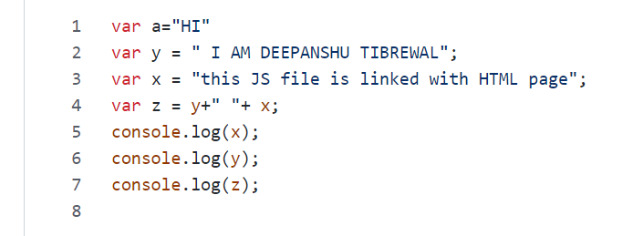

Create external JavaScript file with the extension .js.
After creating, add it to the HTML file in the script tag.
The src attribute is used to include that external JavaScript file.
e.g. External javascript file (script.js) is linked using script tag in the src attribute.
Below image is screenshot of js file content. Also it can be viewed
by opening the console.
